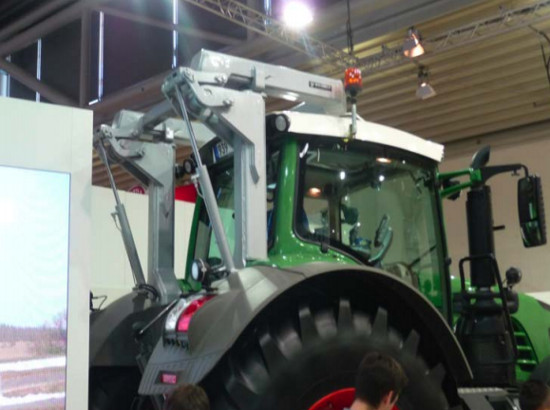

Im Erdbau werden häufig Erdbaumaschinen auf Mieten, Deichen, Dämmen etc. eingesetzt. Bei den hier ausgeführten steilen Böschungswinkeln (30° und steiler, gemessen an der Horizontalen) kann davon ausgegangen werden, dass schon Höhen ab 1 m bei einem Maschinenumsturz erhebliche Belastungen der ROPS-Konstruktion hervorrufen. Unfälle mit entsprechend niedrigen Absturzhöhen bestätigen diese Annahme.
Gemäß § 4 der Betriebssicherheitsverordnung ist zunächst zu prüfen, ob für diese Arbeit speziell für diesen Zweck vom Hersteller vorgesehene Maschinen (z. B. Erdbaumaschinen) eingesetzt werden können.
2.3.1 Errechnung des Beurteilungsfaktors zur Abschätzung der Sicherheit
Ist der Einsatz von Erdbaumaschinen nicht möglich oder aus anderen bautechnischen Gründen nicht sinnvoll, dürfen in Bereichen mit Umsturzgefahren nur Traktoren mit ROPS-Konstruktionen eingesetzt werden, deren Beurteilungsfaktor maximal 1,4 beträgt.
Bestimmung des Beurteilungsfaktors:
Für eine erste Einschätzung auf der
Baustelle genügt eine vereinfachte
Berechnung, bei der das Gesamtgewicht des angetroffenen Traktors
durch sein Leergewicht gem. Typenschild dividiert wird. Das Gesamtgewicht des Traktors setzt sich hierbei
zusammen aus dem Traktorgewicht einschließlich Ballastierung
und getragenen Anbauten bzw.
Zuladungen.
Liegt der Quotient aus angetroffenem Gesamtgewicht / Leergewicht gem. Typenschild oberhalb des Beurteilungsfaktors von 1,4, sind weitere Maßnahmen zu ergreifen.
Eine weitere Option ist:
Es liegt im Einzelfall ein Nachweis
des Herstellers über das bei der
ROPS-Prüfung zu Grunde gelegte
Referenzgewicht nach OECD Test
Code 4 vor. In diesem Fall kann das
Referenzgewicht anstelle des Leergewichtes lt. Typenschild für die
Berechnung des Quotienten herangezogen werden. Liegt der Quotient
dann immer noch oberhalb des Beurteilungsfaktors von 1,4, sind weitere Maßnahmen zu ergreifen.
2.3.2 Weitere Maßnahmen – Verstärkung der Kabine
Verstärkung der Kabine mit einer vom Hersteller für diesen Einsatz vorgesehenen und ausreichend dimensionierten Sicherheitsstruktur (z. B. entsprechend EN/ISO 3471 (ROPS an EBM) oder ISO 8082 (ROPS an Forstmaschinen).
2.3.3 Weitere Maßnahmen – Reduzierung der Zuladung
Reduzierung der Zuladung, indem leichtere getragene Anbaugeräte, ggf. in Kombination mit einer zugehörigen leichteren Ballastierung, eingesetzt werden. Ergibt sich nun ein Beurteilungsfaktor von max. 1,4, kann der Traktor in Bezug auf die Umsturzgefährdung und unter Beachtung der Herstellervorgaben wie eine Erdbaumaschine eingesetzt werden. Die Einhaltung der Gewichtsreduzierung ist für die Dauer der Arbeiten mit Umsturzgefahr durch geeignete Maßnahmen sicherzustellen.

Abb. 3 Vom Hersteller angebotener zusätzlicher Überrollschutz (ROPS)
2.3.4 Weitere Maßnahmen – Sicherstellung von ausreichenden Sicherheitsabständen zu Böschungs- und Umsturzkanten
Durch folgende Maßnahmen können ausreichende Sicherheitsabstände zu Böschungs- und Umsturzkanten sichergestellt werden: